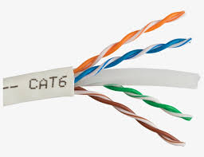
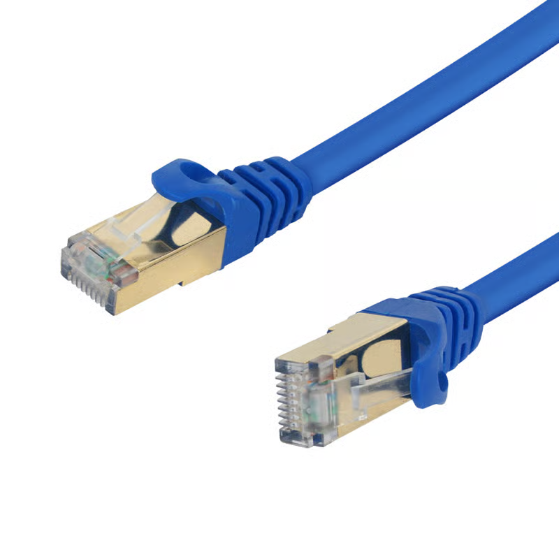
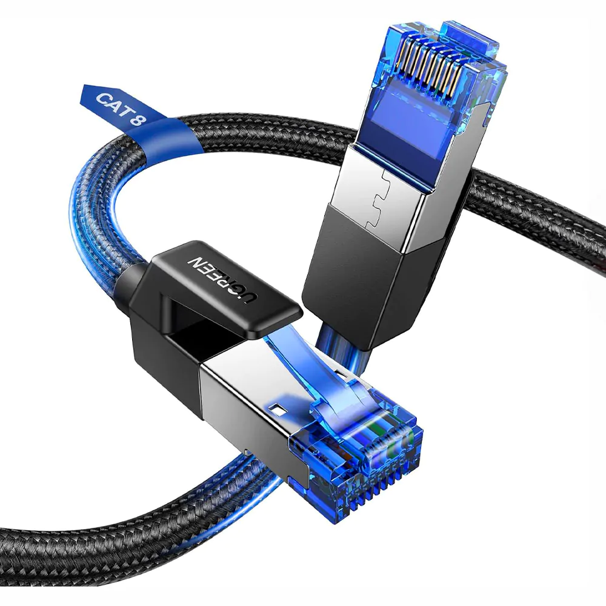

O cabo de rede CAT5e leva esse nome por ser uma versão “Enhanced” (melhorada) do CAT5. Ele é um cabo mais adequado para quem tem conexões acima de 100 Mbps em casa. Isso porque ele consegue atingir 1000 Mbps em transferências, arredondado para a chamada rede Gigabit e também ele acaba sendo um bom meio-termo entre o CAT5 e o CAT6, porque consegue entregar velocidade maior e custa um pouco menos, no geral, que a versão mais avançada. Algumas desvantagens, porém, seguem presentes: é o caso do crosstalk, e também da frequência de 100 MHz.
CAT6: Performance e Redução de Ruído

O cabo de rede CAT6 é uma grande evolução em relação às tecnologias anteriores. Além de permitir conexão doméstica de 1000 Mbps em distâncias máximas de 100 metros, ele também alcança 10 Gbps se a distância for de até 50 metros. para usuários avançados e segmentos específicos da indústria isso é de grande ajuda para, por exemplo, transferir arquivos entre computadores locais a velocidades exorbitantes.
CAT7: Blindagem Extrema

O cabo Cat 7 consiste em 4 pares de fios de cobre firmemente trançados e adota um método de blindagem S/FTP (Par Trançado com Folha Blindada). O S/FTP adota um design de blindagem dupla: cada um dos quatro pares trançados é blindado individualmente com uma película de alumínio e, em seguida, o feixe de cabos como um todo é enrolado em um protegido por tela or tela-camada de folha metálica. Este tipo de blindagem avançada pode proteger o cabo de interferência eletromagnética (EMI) e diafonia alienígena (AXT) no mais alto nível.
CAT8: O Futuro dos Data Centers

O cabo Ethernet Cat 8 possui o mais alto desempenho, principalmente devido aos seguintes fatores: velocidade Cat 8, largura de banda Cat 8, PoE Cat 8, capacidade de interferência de sinal e diafonia, etc. São essas características que o tornam importante para redes de alta velocidade e LANs de ponta. O Cat8 vem com SFTP (Par Trançado Blindado e com Folha) Cat 8. O melhor cabo Ethernet Cat 8 do mercado utiliza uma bitola menor, 24 AWG (diâmetro maior), isolamento individual dos fios, blindagem com folha metálica e blindagem trançada de aço para garantir menor resistência e as melhores funções de blindagem. A melhor tecnologia de blindagem garante a mais alta capacidade de proteção contra diafonia e interferência de sinais. atenuação.